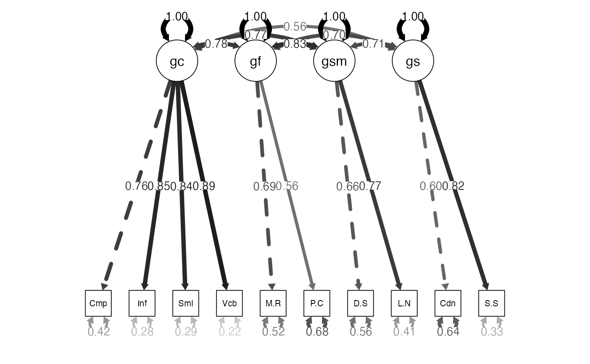
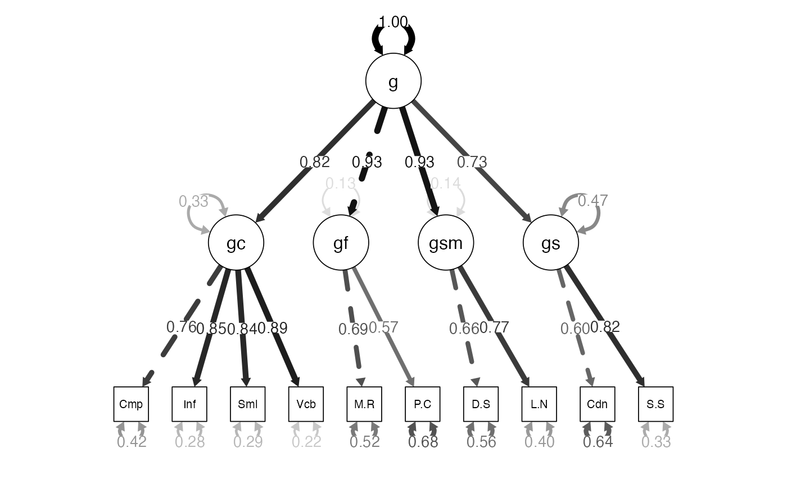
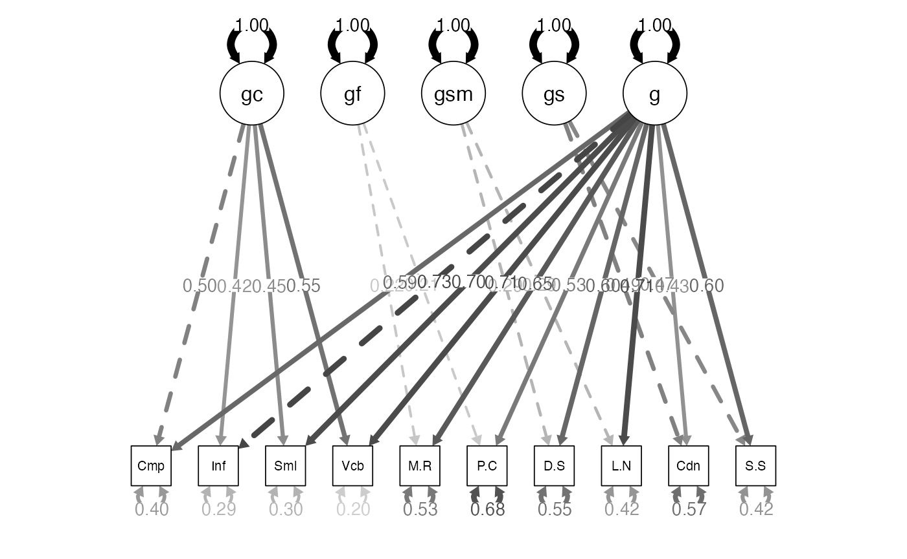

Confirmatory Factor Analysis: Second Order
lecture_secondcfa.RmdSecond Order Latent Models
A second order model is one that is structured into an order or rank.
-
Two types we will consider:
- Higher-order: Describes when latent variables are structured so that latents influence other latents into levels.
- Bi-factor: Generally used to describe a CFA with two sets of latent variables (not hierarchical).
Second Order Models
-
The idea of a higher order model is:
- You have some latent variables that are measured by the observed variables.
- A portion of the variance in the latent variables can be explained by a second (set) of latent variables.
- Therefore, we are switching out the covariances between factors and using another latent to explain them.
Second Order Models
- When are these used?
- When there are multiple latent variables that covary with each other (and a lot).
- A second set of latents explains that covariance.

Higher Order Models
- The covariance of the first order is accounted for by the second order plus a specific factor.
- Specific factors are error that is not explained by the second order latents.
- The higher order is thought to indirectly influence the manifest variables through the first order.
Identification
-
Remember that each portion of the model has to be identified.
- The section with each latent variable has to be identified.
- The section with the latents has to be identified.
Identification
-
You can achieve identification in a couple of ways:
- Set some of the loadings in the upper portion of the model to be equal by giving them the same name.
- You can set the variance in the upper latent to be one.
- You can set some of the error variances of the latents in the lower portion to be equal.
Bi-Factor Models
Special type of model with two sets of latents, but they are not hierarchically structured.
-
Best used when:
- General factor that accounts for variance in the manifest variables.
- Domain specific areas that are thought to influence the manifest variables.

Bi-Factor Models
- One thing to note is that the latent variables are left uncorrelated in this type of model.
- This structure represents the domain specific part of the interpretation.
Model Differences
-
Differences between bi-factor and hierarchical:
- In hierarchical models, the second order influences the first order, while the two sets of latents in bi-factors are uncorrelated.
- What does that allow you to test differently?
Model Differences
-
Advantages:
- Allows you to see how the first order latent variables influence the manifest variables separately from the other latent variables.
- After accounting for the general latent variable, are the domain specific items still accounting for variance?
- You can compare models with and without the domain specific areas
Examples: WISC
- Going back to the WISC data, this time with more of the subscales that are available.
library(lavaan)
library(semPlot)
##import the data
wisc4.cov <- lav_matrix_lower2full(c(8.29,
5.37,9.06,
2.83,4.44,8.35,
2.83,3.32,3.36,8.88,
5.50,6.66,4.20,3.43,9.18,
6.18,6.73,4.01,3.33,6.77,9.12,
3.52,3.77,3.19,2.75,3.88,4.05,8.88,
3.79,4.50,3.72,3.39,4.53,4.70,4.54,8.94,
2.30,2.67,2.40,2.38,2.06,2.59,2.65,2.83,8.76,
3.06,4.04,3.70,2.79,3.59,3.67,3.44,4.20,4.53,9.73))
wisc4.sd <- c(2.88,3.01,2.89,2.98,3.03,3.02,2.98,2.99,2.96,3.12)
names(wisc4.sd) <-
colnames(wisc4.cov) <-
rownames(wisc4.cov) <- c("Comprehension", "Information",
"Matrix.Reasoning", "Picture.Concepts",
"Similarities", "Vocabulary", "Digit.Span",
"Letter.Number", "Coding", "Symbol.Search") Examples: WISC
- Let’s start with a first order model for the WISC.
- By starting with the measurement model, we can ensure the measurement section is identified and works correctly.
- You should also check out the correlations/covariances between factors to make sure that they are even related.
Examples: WISC Build the Model
##first order model
wisc4.fourFactor.model <- '
gc =~ Comprehension + Information + Similarities + Vocabulary
gf =~ Matrix.Reasoning + Picture.Concepts
gsm =~ Digit.Span + Letter.Number
gs =~ Coding + Symbol.Search
' Examples: WISC Analyze the Model
wisc4.fourFactor.fit <- cfa(model = wisc4.fourFactor.model,
sample.cov = wisc4.cov,
sample.nobs = 550)Examples: WISC Summarize the Model
-
Logical solution:
- Positive variances
- SMCs + Correlations < 1
- No error messages
- SEs are not “huge”
-
Estimates:
- Do our questions load appropriately?
-
Model fit:
- What do the fit indices indicate?
- Can we improve model fit without overfitting?
summary(wisc4.fourFactor.fit,
fit.measure = TRUE,
standardized = TRUE,
rsquare = TRUE)
#> lavaan 0.6-19 ended normally after 83 iterations
#>
#> Estimator ML
#> Optimization method NLMINB
#> Number of model parameters 26
#>
#> Number of observations 550
#>
#> Model Test User Model:
#>
#> Test statistic 52.226
#> Degrees of freedom 29
#> P-value (Chi-square) 0.005
#>
#> Model Test Baseline Model:
#>
#> Test statistic 2554.487
#> Degrees of freedom 45
#> P-value 0.000
#>
#> User Model versus Baseline Model:
#>
#> Comparative Fit Index (CFI) 0.991
#> Tucker-Lewis Index (TLI) 0.986
#>
#> Loglikelihood and Information Criteria:
#>
#> Loglikelihood user model (H0) -12562.889
#> Loglikelihood unrestricted model (H1) -12536.776
#>
#> Akaike (AIC) 25177.778
#> Bayesian (BIC) 25289.836
#> Sample-size adjusted Bayesian (SABIC) 25207.301
#>
#> Root Mean Square Error of Approximation:
#>
#> RMSEA 0.038
#> 90 Percent confidence interval - lower 0.021
#> 90 Percent confidence interval - upper 0.055
#> P-value H_0: RMSEA <= 0.050 0.876
#> P-value H_0: RMSEA >= 0.080 0.000
#>
#> Standardized Root Mean Square Residual:
#>
#> SRMR 0.020
#>
#> Parameter Estimates:
#>
#> Standard errors Standard
#> Information Expected
#> Information saturated (h1) model Structured
#>
#> Latent Variables:
#> Estimate Std.Err z-value P(>|z|) Std.lv Std.all
#> gc =~
#> Comprehension 1.000 2.193 0.762
#> Information 1.160 0.056 20.802 0.000 2.544 0.846
#> Similarities 1.166 0.056 20.772 0.000 2.558 0.845
#> Vocabulary 1.218 0.056 21.860 0.000 2.670 0.885
#> gf =~
#> Matrix.Reasnng 1.000 2.000 0.693
#> Picture.Cncpts 0.839 0.078 10.775 0.000 1.677 0.563
#> gsm =~
#> Digit.Span 1.000 1.967 0.661
#> Letter.Number 1.172 0.086 13.560 0.000 2.304 0.771
#> gs =~
#> Coding 1.000 1.779 0.601
#> Symbol.Search 1.429 0.139 10.283 0.000 2.542 0.816
#>
#> Covariances:
#> Estimate Std.Err z-value P(>|z|) Std.lv Std.all
#> gc ~~
#> gf 3.412 0.337 10.130 0.000 0.778 0.778
#> gsm 3.302 0.336 9.826 0.000 0.766 0.766
#> gs 2.180 0.290 7.511 0.000 0.559 0.559
#> gf ~~
#> gsm 3.245 0.352 9.220 0.000 0.825 0.825
#> gs 2.507 0.329 7.608 0.000 0.705 0.705
#> gsm ~~
#> gs 2.474 0.324 7.627 0.000 0.707 0.707
#>
#> Variances:
#> Estimate Std.Err z-value P(>|z|) Std.lv Std.all
#> .Comprehension 3.467 0.240 14.452 0.000 3.467 0.419
#> .Information 2.571 0.203 12.637 0.000 2.571 0.284
#> .Similarities 2.622 0.207 12.672 0.000 2.622 0.286
#> .Vocabulary 1.973 0.181 10.920 0.000 1.973 0.217
#> .Matrix.Reasnng 4.336 0.424 10.224 0.000 4.336 0.520
#> .Picture.Cncpts 6.051 0.434 13.944 0.000 6.051 0.683
#> .Digit.Span 4.996 0.377 13.239 0.000 4.996 0.564
#> .Letter.Number 3.614 0.381 9.499 0.000 3.614 0.405
#> .Coding 5.581 0.428 13.053 0.000 5.581 0.638
#> .Symbol.Search 3.249 0.573 5.668 0.000 3.249 0.335
#> gc 4.807 0.468 10.270 0.000 1.000 1.000
#> gf 3.999 0.544 7.353 0.000 1.000 1.000
#> gsm 3.868 0.497 7.790 0.000 1.000 1.000
#> gs 3.163 0.484 6.535 0.000 1.000 1.000
#>
#> R-Square:
#> Estimate
#> Comprehension 0.581
#> Information 0.716
#> Similarities 0.714
#> Vocabulary 0.783
#> Matrix.Reasnng 0.480
#> Picture.Cncpts 0.317
#> Digit.Span 0.436
#> Letter.Number 0.595
#> Coding 0.362
#> Symbol.Search 0.665Examples: WISC Diagram the Model
semPaths(wisc4.fourFactor.fit,
whatLabels="std",
edge.label.cex = 1,
edge.color = "black",
what = "std",
layout="tree")
Examples: WISC Interpretation
- In the first order model, we find that the correlations are pretty high.
- That’s a good sign that maybe a second order model is appropriate.
- Or that the factors should be collapsed together, as they are not distinct.
Examples: Second-Order WISC
- Build the model:
wisc4.higherOrder.model <- '
gc =~ Comprehension + Information + Similarities + Vocabulary
gf =~ Matrix.Reasoning + Picture.Concepts
gsm =~ Digit.Span + Letter.Number
gs =~ Coding + Symbol.Search
g =~ gf + gc + gsm + gs
'Examples: Second-Order WISC
- Analyze the model:
wisc4.higherOrder.fit <- cfa(model = wisc4.higherOrder.model,
sample.cov = wisc4.cov,
sample.nobs = 550)Examples: Second-Order WISC
-
Summarize the model:
- Note: the fit indices should not change.
- Let’s look at loadings, where the shift should have happened.
summary(wisc4.higherOrder.fit,
fit.measure=TRUE,
standardized=TRUE,
rsquare = TRUE)
#> lavaan 0.6-19 ended normally after 67 iterations
#>
#> Estimator ML
#> Optimization method NLMINB
#> Number of model parameters 24
#>
#> Number of observations 550
#>
#> Model Test User Model:
#>
#> Test statistic 58.180
#> Degrees of freedom 31
#> P-value (Chi-square) 0.002
#>
#> Model Test Baseline Model:
#>
#> Test statistic 2554.487
#> Degrees of freedom 45
#> P-value 0.000
#>
#> User Model versus Baseline Model:
#>
#> Comparative Fit Index (CFI) 0.989
#> Tucker-Lewis Index (TLI) 0.984
#>
#> Loglikelihood and Information Criteria:
#>
#> Loglikelihood user model (H0) -12565.866
#> Loglikelihood unrestricted model (H1) -12536.776
#>
#> Akaike (AIC) 25179.732
#> Bayesian (BIC) 25283.170
#> Sample-size adjusted Bayesian (SABIC) 25206.984
#>
#> Root Mean Square Error of Approximation:
#>
#> RMSEA 0.040
#> 90 Percent confidence interval - lower 0.024
#> 90 Percent confidence interval - upper 0.056
#> P-value H_0: RMSEA <= 0.050 0.846
#> P-value H_0: RMSEA >= 0.080 0.000
#>
#> Standardized Root Mean Square Residual:
#>
#> SRMR 0.023
#>
#> Parameter Estimates:
#>
#> Standard errors Standard
#> Information Expected
#> Information saturated (h1) model Structured
#>
#> Latent Variables:
#> Estimate Std.Err z-value P(>|z|) Std.lv Std.all
#> gc =~
#> Comprehension 1.000 2.194 0.763
#> Information 1.160 0.056 20.832 0.000 2.545 0.846
#> Similarities 1.164 0.056 20.767 0.000 2.555 0.844
#> Vocabulary 1.217 0.056 21.882 0.000 2.670 0.885
#> gf =~
#> Matrix.Reasnng 1.000 1.991 0.690
#> Picture.Cncpts 0.846 0.079 10.758 0.000 1.685 0.566
#> gsm =~
#> Digit.Span 1.000 1.966 0.660
#> Letter.Number 1.173 0.087 13.503 0.000 2.306 0.772
#> gs =~
#> Coding 1.000 1.771 0.599
#> Symbol.Search 1.441 0.142 10.149 0.000 2.553 0.819
#> g =~
#> gf 1.000 0.930 0.930
#> gc 0.968 0.079 12.241 0.000 0.817 0.817
#> gsm 0.984 0.087 11.319 0.000 0.927 0.927
#> gs 0.698 0.080 8.689 0.000 0.730 0.730
#>
#> Variances:
#> Estimate Std.Err z-value P(>|z|) Std.lv Std.all
#> .Comprehension 3.460 0.240 14.440 0.000 3.460 0.418
#> .Information 2.565 0.203 12.614 0.000 2.565 0.284
#> .Similarities 2.635 0.208 12.692 0.000 2.635 0.288
#> .Vocabulary 1.973 0.181 10.906 0.000 1.973 0.217
#> .Matrix.Reasnng 4.372 0.424 10.306 0.000 4.372 0.525
#> .Picture.Cncpts 6.025 0.434 13.871 0.000 6.025 0.680
#> .Digit.Span 5.000 0.378 13.219 0.000 5.000 0.564
#> .Letter.Number 3.608 0.382 9.441 0.000 3.608 0.404
#> .Coding 5.606 0.430 13.040 0.000 5.606 0.641
#> .Symbol.Search 3.197 0.584 5.473 0.000 3.197 0.329
#> .gc 1.599 0.226 7.082 0.000 0.332 0.332
#> .gf 0.534 0.340 1.569 0.117 0.135 0.135
#> .gsm 0.540 0.241 2.246 0.025 0.140 0.140
#> .gs 1.467 0.262 5.590 0.000 0.468 0.468
#> g 3.429 0.452 7.591 0.000 1.000 1.000
#>
#> R-Square:
#> Estimate
#> Comprehension 0.582
#> Information 0.716
#> Similarities 0.712
#> Vocabulary 0.783
#> Matrix.Reasnng 0.475
#> Picture.Cncpts 0.320
#> Digit.Span 0.436
#> Letter.Number 0.596
#> Coding 0.359
#> Symbol.Search 0.671
#> gc 0.668
#> gf 0.865
#> gsm 0.860
#> gs 0.532Examples: Second-Order WISC
semPaths(wisc4.higherOrder.fit,
whatLabels="std",
edge.label.cex = 1,
edge.color = "black",
what = "std",
layout="tree")
Examples: Bi-factor WISC
-
Build the model:
- In this particular model, because we have only two indicators, we have to set them equal for identification for a bifactor to run properly?
- Why not the second order model?
- After you define the measurement model, you would define a second latent that every variable is related to.
- Note: these are the variables not the latents like a hierarchical model.
wisc4.bifactor.model <- '
gc =~ Comprehension + Information + Similarities + Vocabulary
gf =~ a*Matrix.Reasoning + a*Picture.Concepts
gsm =~ b*Digit.Span + b*Letter.Number
gs =~ c*Coding + c*Symbol.Search
g =~ Information + Comprehension + Matrix.Reasoning + Picture.Concepts + Similarities + Vocabulary + Digit.Span + Letter.Number + Coding + Symbol.Search
'Examples: Bi-factor WISC
-
Analyze the model:
- Last, we want to turn off the automatic exogenous only correlations,
which we do with the
orthogonal = TRUEmodel. - The argument is that all the correlations normally seen between the domain specific latents are due to the general factor.
- Last, we want to turn off the automatic exogenous only correlations,
which we do with the
wisc4.bifactor.fit <- cfa(model = wisc4.bifactor.model,
sample.cov = wisc4.cov,
sample.nobs = 550,
orthogonal = TRUE)Examples: Bi-factor WISC
-
Summarize the model:
- Notice the covariances are zero.
- Notice the equal loading estimates for the variables set to the same.
summary(wisc4.bifactor.fit,
fit.measure = TRUE,
rsquare = TRUE,
standardized = TRUE)
#> lavaan 0.6-19 ended normally after 64 iterations
#>
#> Estimator ML
#> Optimization method NLMINB
#> Number of model parameters 27
#>
#> Number of observations 550
#>
#> Model Test User Model:
#>
#> Test statistic 50.833
#> Degrees of freedom 28
#> P-value (Chi-square) 0.005
#>
#> Model Test Baseline Model:
#>
#> Test statistic 2554.487
#> Degrees of freedom 45
#> P-value 0.000
#>
#> User Model versus Baseline Model:
#>
#> Comparative Fit Index (CFI) 0.991
#> Tucker-Lewis Index (TLI) 0.985
#>
#> Loglikelihood and Information Criteria:
#>
#> Loglikelihood user model (H0) -12562.192
#> Loglikelihood unrestricted model (H1) -12536.776
#>
#> Akaike (AIC) 25178.385
#> Bayesian (BIC) 25294.753
#> Sample-size adjusted Bayesian (SABIC) 25209.043
#>
#> Root Mean Square Error of Approximation:
#>
#> RMSEA 0.039
#> 90 Percent confidence interval - lower 0.021
#> 90 Percent confidence interval - upper 0.055
#> P-value H_0: RMSEA <= 0.050 0.864
#> P-value H_0: RMSEA >= 0.080 0.000
#>
#> Standardized Root Mean Square Residual:
#>
#> SRMR 0.022
#>
#> Parameter Estimates:
#>
#> Standard errors Standard
#> Information Expected
#> Information saturated (h1) model Structured
#>
#> Latent Variables:
#> Estimate Std.Err z-value P(>|z|) Std.lv Std.all
#> gc =~
#> Comprehnsn 1.000 1.426 0.496
#> Informatin 0.883 0.100 8.820 0.000 1.259 0.419
#> Similarits 0.965 0.106 9.134 0.000 1.375 0.454
#> Vocabulary 1.168 0.121 9.670 0.000 1.665 0.552
#> gf =~
#> Mtrx.Rsnng (a) 1.000 0.634 0.220
#> Pctr.Cncpt (a) 1.000 0.634 0.213
#> gsm =~
#> Digit.Span (b) 1.000 0.863 0.290
#> Lettr.Nmbr (b) 1.000 0.863 0.289
#> gs =~
#> Coding (c) 1.000 1.461 0.494
#> Symbl.Srch (c) 1.000 1.461 0.469
#> g =~
#> Informatin 1.000 2.191 0.728
#> Comprehnsn 0.780 0.051 15.388 0.000 1.709 0.594
#> Mtrx.Rsnng 0.859 0.066 13.107 0.000 1.883 0.652
#> Pctr.Cncpt 0.716 0.067 10.704 0.000 1.568 0.527
#> Similarits 0.972 0.051 18.880 0.000 2.130 0.704
#> Vocabulary 0.974 0.047 20.528 0.000 2.134 0.707
#> Digit.Span 0.818 0.068 11.971 0.000 1.792 0.602
#> Lettr.Nmbr 0.965 0.069 13.900 0.000 2.113 0.707
#> Coding 0.584 0.065 8.975 0.000 1.280 0.433
#> Symbl.Srch 0.851 0.069 12.262 0.000 1.865 0.598
#>
#> Covariances:
#> Estimate Std.Err z-value P(>|z|) Std.lv Std.all
#> gc ~~
#> gf 0.000 0.000 0.000
#> gsm 0.000 0.000 0.000
#> gs 0.000 0.000 0.000
#> g 0.000 0.000 0.000
#> gf ~~
#> gsm 0.000 0.000 0.000
#> gs 0.000 0.000 0.000
#> g 0.000 0.000 0.000
#> gsm ~~
#> gs 0.000 0.000 0.000
#> g 0.000 0.000 0.000
#> gs ~~
#> g 0.000 0.000 0.000
#>
#> Variances:
#> Estimate Std.Err z-value P(>|z|) Std.lv Std.all
#> .Comprehension 3.323 0.250 13.275 0.000 3.323 0.402
#> .Information 2.660 0.202 13.179 0.000 2.660 0.294
#> .Similarities 2.737 0.212 12.914 0.000 2.737 0.299
#> .Vocabulary 1.777 0.208 8.560 0.000 1.777 0.195
#> .Matrix.Reasnng 4.388 0.383 11.450 0.000 4.388 0.526
#> .Picture.Cncpts 6.004 0.444 13.534 0.000 6.004 0.677
#> .Digit.Span 4.908 0.381 12.890 0.000 4.908 0.554
#> .Letter.Number 3.713 0.345 10.751 0.000 3.713 0.416
#> .Coding 4.971 0.408 12.174 0.000 4.971 0.568
#> .Symbol.Search 4.100 0.391 10.489 0.000 4.100 0.422
#> gc 2.032 0.373 5.450 0.000 1.000 1.000
#> gf 0.402 0.280 1.437 0.151 1.000 1.000
#> gsm 0.745 0.282 2.640 0.008 1.000 1.000
#> gs 2.136 0.333 6.412 0.000 1.000 1.000
#> g 4.798 0.543 8.841 0.000 1.000 1.000
#>
#> R-Square:
#> Estimate
#> Comprehension 0.598
#> Information 0.706
#> Similarities 0.701
#> Vocabulary 0.805
#> Matrix.Reasnng 0.474
#> Picture.Cncpts 0.323
#> Digit.Span 0.446
#> Letter.Number 0.584
#> Coding 0.432
#> Symbol.Search 0.578Examples: Bi-factor WISC
- Diagram the model:
semPaths(wisc4.bifactor.fit,
whatLabels="std",
edge.label.cex = 1,
edge.color = "black",
what = "std",
layout="tree")